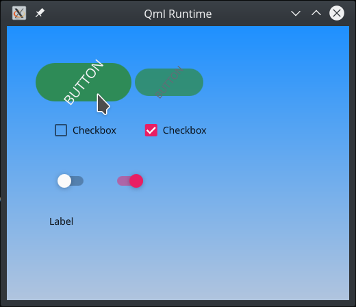
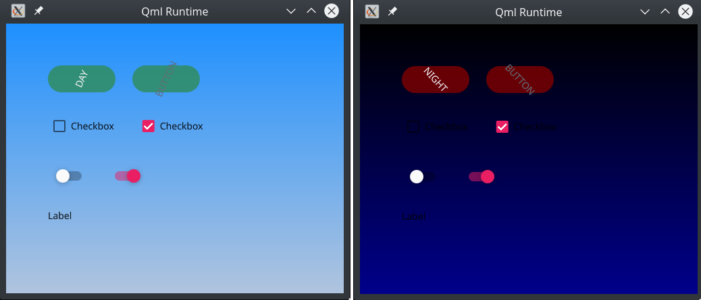

UI Styling
Info
This material is work in progress and will change!
A style changes the visual appearance of styled controls. These can be common controls as part of the component library but also application controls or even containers. To be able to style a UI successfully, all controls need to adhere to a common style programming guide which shows the developer how to ensure that newly created components are styleable.
In case the application does not use custom controls and all styling is already done by the common controls library and no work is needed here. This chapter is more for people who need to create custom controls or have specific UI requirements deviating from a common set.
Skin / Style / Theme
There are often different terms used for a similar set of functionality offered to change the appearance of the user interface. Here are the terms used in this book.
- Skin - A skin is a re-programming of the topmost UI layer. It may re-use or adapt larger parts of the existing UI code but in general, a skin deviates so much from the original UI that it can not be embedded into the original code and often this leads to a fork of the UI layer.
- Style - A central visual appearance hub to manage the appearance of controls. This can contain geometry, colors, effects, font and font geometry or other output methods.
- Theme - Themes are variants of a given Style. They change some properties of it, such as the color palette, but still share the same essence and major design features. A classic example is having a "light" and a "dark" theme for you Style, which you change at runtime depending on the time of day or user preference.
A theme is the simplest visual change. A theme requires a style which supports the theming functionality. A skin changes the layout of the user interface. If the information architecture is preserved the work required is to re-write the UI layer based custom style. All appearance changes require they run on top of the same platform.
Styling versus creating new controls
You should strive to have the UI code of your QML application look familiar to any experienced QML UI developer. This means avoiding the introduction of new idioms and concepts unless when actually necessary. Qt Quick Controls 2 comes already with several common controls, such as Button, CheckBox, ComboBox, etc. It's worth making an effort to use those and make them look and behave according to your design specs via styling instead of jumping into the creation new controls such as MySpecialButton, MyProjectNameComboBox, and so on. It's a harder route, but it has multiple benefits, such as:
- It reduces the learning curve for new members in your team, as there are less new APIs and concepts to be learned.
- Makes your application easier to maintain. A consequence of the previous point.
- It's easier to port QML applications made for other platforms into your platform, as there are less APIs and concepts exclusive to your project or platform, which translates into less code changes.
- Don't reinvent the wheel, or "stand on the shoulders of giants". Time and effort was put into making the APIs of Qt Quick Controls 2 components, so it makes sense to try to use them instead of coming up with your own, which could be just duplicating effort.
Customizing an existing Style
This is the process of modifying one of the built-in styles. It is often the initial step when defining your own style. The API of the controls does not change and for an initial UI, using an existing style and tweaking it for your own purposes is notably simpler than creating a brand new one from scratch. How to customize an existing style is covered :qt5:here <qtquickcontrols2-styles.html>.
Creating a new Style
If your HMI has its own particlar look and feel, its own UI design guide, the :qt5:existing Qt Quick Controls 2 styles <qtquickcontrols2-styles.html> probably won't suite you and you will have to create your own style to implement what the UI/UX designers envisioned.
To exemplify how this is achieved let's start with a simple UI, a sort of components gallery showcasing a handful of Qt Quick Controls 2 components in different states.
1 2 3 4 5 6 7 8 9 10 11 12 13 14 15 16 17 18 19 20 21 22 23 24 25 26 27 28 29 30 31 32 33 34 | import QtQuick 2.11 import QtQuick.Controls 2.1 Pane { width: 600 height: 600 Column { anchors.fill: parent padding: 50 spacing: 25 Row { spacing: 25 Button { text: "Button" } Button { text: "Button"; enabled: false } } Row { spacing: 25 CheckBox { text: "Checkbox" } CheckBox { text: "Checkbox"; checked: true } } Row { spacing: 25 Switch {} Switch { checked: true } } Label { text: "Label" } } } |
Save it as, say, controls.qml. Now run it with the qml tool
1 | $ qml controls.qml |
You should see something like this:

Then try it with one of the styles shipped with Qt Quick Controls 2, such as "material"
1 | $ qml controls.qml -style material |

Or "fusion" (in a desktop environment that's using a dark theme)
1 | $ qml controls.qml -style fusion |

You can see that by using Qt Quick Controls 2 styles you can have the application code independent of the look and feel of its components. So no changes are needed in the components' API exposed to application code.
Now we are going to create a new style that implements a different look and feel, which we will call "foobar". The first component we will customize in the foobar style is going to be the Pane, as it's the simplest. Create a subdirectory called "foobar". Then copy the file QT_INSTALL_DIR/qml/QtQuick/Controls.2/Pane.qml to it, where QT_INSTALL_DIR is the path where your Qt is installed. It should look like the following:
1 2 3 4 5 6 7 8 9 10 11 12 13 14 15 16 17 18 19 | import QtQuick 2.12 import QtQuick.Controls 2.5 import QtQuick.Controls.impl 2.5 import QtQuick.Templates 2.5 as T T.Pane { id: control implicitWidth: Math.max(implicitBackgroundWidth + leftInset + rightInset, contentWidth + leftPadding + rightPadding) implicitHeight: Math.max(implicitBackgroundHeight + topInset + bottomInset, contentHeight + topPadding + bottomPadding) padding: 12 background: Rectangle { color: control.palette.window } } |
The idea is to collect the standard implementation of the component whose look & feel you want to customize in your style from that directory in Qt to your own style directory and then modify it at will. In our foobar style we want the Pane background to be a Gradient instead, hence we will make the following change:
1 2 3 4 5 6 7 8 | ... background: Rectangle { gradient: Gradient { GradientStop { position: 0.0; color: "dodgerblue" } GradientStop { position: 1.0; color: "lightsteelblue" } } } ... |
Now let's run our controls.qml app with our brand new style. For that we will have to supply two additional environment variables: QT_QUICK_CONTROLS_STYLE_PATH to tell Qt where in the filesystem to look for more styles and QT_QUICK_CONTROLS_FALLBACK_STYLE to tell Qt which style to fallback on in case the chosen one is missing the implementation of some component (more info :qt5:here <qtquickcontrols2-environment.html>). Since our foobar style just has the implementation of Pane, all other components will fallback to another implementation.
1 | $ QT_QUICK_CONTROLS_STYLE_PATH=. QT_QUICK_CONTROLS_FALLBACK_STYLE=Material qml controls.qml -style foobar |

Next we want to style the Button component. As with did with Pane, just copy Button.qml over from QT_INSTALL_DIR/qml/QtQuick/Controls.2 into our foobar style directory. If you open that file now you will see that it's quite more involded than the Pane:
1 2 3 4 5 6 7 8 9 10 11 12 13 14 15 16 17 18 19 20 21 22 23 24 25 26 27 28 29 30 31 32 33 34 35 36 37 38 39 40 41 42 43 44 | import QtQuick 2.12 import QtQuick.Controls 2.5 import QtQuick.Controls.impl 2.5 import QtQuick.Templates 2.5 as T T.Button { id: control implicitWidth: Math.max(implicitBackgroundWidth + leftInset + rightInset, implicitContentWidth + leftPadding + rightPadding) implicitHeight: Math.max(implicitBackgroundHeight + topInset + bottomInset, implicitContentHeight + topPadding + bottomPadding) padding: 6 horizontalPadding: padding + 2 spacing: 6 icon.width: 24 icon.height: 24 icon.color: control.checked || control.highlighted ? control.palette.brightText : control.flat && !control.down ? (control.visualFocus ? control.palette.highlight : control.palette.windowText) : control.palette.buttonText contentItem: IconLabel { spacing: control.spacing mirrored: control.mirrored display: control.display icon: control.icon text: control.text font: control.font color: control.checked || control.highlighted ? control.palette.brightText : control.flat && !control.down ? (control.visualFocus ? control.palette.highlight : control.palette.windowText) : control.palette.buttonText } background: Rectangle { implicitWidth: 100 implicitHeight: 40 visible: !control.flat || control.down || control.checked || control.highlighted color: Color.blend(control.checked || control.highlighted ? control.palette.dark : control.palette.button, control.palette.mid, control.down ? 0.5 : 0.0) border.color: control.palette.highlight border.width: control.visualFocus ? 2 : 0 } } |
You're free to change anything at will. This is just a default look & feel implementation. You're free to take it as it is, do some small modifications on top of it or wipe it out and do something completely different. What's important is to try to and obey the exising properties (icon, text, impleicitWidth, etc) as much as it makes sense to in your HMI usage and to put the foreground content of your button (eg, text and icon) in contentItem and its background, if any, in background.
It's worth noting the widespread usage of the palette property. If you want to tweak its values in your style, the best place to do so would be in the Control.qml style implementation, as all Qt Quick Controls 2 components inherit from it. But if the categories (button, windowText, highlight, etc) in that palette type don't really suite your needs or your UI design guide you're free to use your own structure to keep your custom color and other values instead. We will come back to it later.
For now let's just set a hardcoded background color, make the background rounded, make the button larger when down/pushed and have its text rotating (just because we can :) ). These would be the modifications:
1 2 3 4 5 6 7 8 9 10 11 12 13 14 15 16 17 18 19 20 21 22 23 24 25 26 27 28 29 30 31 32 33 34 35 36 37 38 39 40 41 42 43 44 45 46 47 48 49 50 51 52 53 | --- a/foobar/Button.qml +++ b/foobar/Button.qml @@ -15,12 +15,18 @@ T.Button { horizontalPadding: padding + 2 spacing: 6 + scale: control.down ? 1.4 : 1 + Behavior on scale { + NumberAnimation { easing.type: Easing.OutCubic; duration: 200 } + } + icon.width: 24 icon.height: 24 icon.color: control.checked || control.highlighted ? control.palette.brightText : control.flat && !control.down ? (control.visualFocus ? control.palette.highlight : control.palette.windowText) : control.palette.buttonText contentItem: IconLabel { + id: iconLabel spacing: control.spacing mirrored: control.mirrored display: control.display @@ -30,15 +36,29 @@ T.Button { font: control.font color: control.checked || control.highlighted ? control.palette.brightText : control.flat && !control.down ? (control.visualFocus ? control.palette.highlight : control.palette.windowText) : control.palette.buttonText + + RotationAnimator { + target: iconLabel + from: 0; to: 360 + duration: 1500 + running: true + loops: Animation.Infinite + } } background: Rectangle { implicitWidth: 100 implicitHeight: 40 visible: !control.flat || control.down || control.checked || control.highlighted - color: Color.blend(control.checked || control.highlighted ? control.palette.dark : control.palette.button, - control.palette.mid, control.down ? 0.5 : 0.0) + + color: "seagreen" + opacity: control.down ? 1 : 0.8 + Behavior on opacity { + NumberAnimation { easing.type: Easing.OutCubic; duration: 200 } + } + border.color: control.palette.highlight border.width: control.visualFocus ? 2 : 0 + radius: width / 2 } } |
If you run that application again you should see that the buttons are animated and look wildly different from the other styles. This is just to give an idea of how flexible and powerful the Qt Quick Controls 2 styling is.

Collecting values in a Style object
So far we have been hardcoding color values directly in the component's style implementation. But for better reusability it's prefferable to give them names and collect them all into a single entity. There are a couple of ways of doing it but, again, we will start with the simplest: creating a new qml module containing a singleton QtObject which will hold all the color and other values used throughout the style implementation. In this example we will name that singleton FoobarStyle. Create a subdirectory called imports and inside it yet another subdirectory called FoobarStyle, which will be the name of our qml module.
Inside imports/FoobarStyle create a file named qmldir with the following content::
1 2 | module FoobarStyle singleton FoobarStyle 1.0 FoobarStyle.qml |
Then proceed to create the file FoobarStyle.qml also inside imports/FoobarStyle::
1 2 3 4 5 6 7 8 9 | pragma singleton import QtQuick 2.11 QtObject { property color gradientBackgroundTopColor: "dodgerblue" property color gradientBackgroundBottomColor: "lightsteelblue" property color buttonBackgroundColor: "seagreen" } |
FoobarStyle collects the colors have been used so far. You can have those names be more specific (eg. button background color) or more generic (eg. secondary control color) according to how they're used throught the implenentation and how your UI Style guide describes them. Now let's get back to Panel.qml and Button.qml replacing the hardcoded values with their corresponding named colors::
1 2 3 4 5 6 7 8 9 10 11 12 13 14 15 16 17 18 19 20 21 22 23 24 25 26 27 28 29 30 31 32 33 34 35 36 37 38 39 40 41 42 43 44 | --- a/foobar/Button.qml +++ b/foobar/Button.qml @@ -3,6 +3,8 @@ import QtQuick.Controls 2.5 import QtQuick.Controls.impl 2.5 import QtQuick.Templates 2.5 as T +import FoobarStyle 1.0 + T.Button { id: control @@ -51,7 +53,7 @@ T.Button { implicitHeight: 40 visible: !control.flat || control.down || control.checked || control.highlighted - color: "seagreen" + color: FoobarStyle.buttonBackgroundColor opacity: control.down ? 1 : 0.8 Behavior on opacity { NumberAnimation { easing.type: Easing.OutCubic; duration: 200 } diff --git a/foobar/Pane.qml b/foobar/Pane.qml index f903afa..b82be7f 100644 --- a/foobar/Pane.qml +++ b/foobar/Pane.qml @@ -3,6 +3,8 @@ import QtQuick.Controls 2.5 import QtQuick.Controls.impl 2.5 import QtQuick.Templates 2.5 as T +import FoobarStyle 1.0 + T.Pane { id: control @@ -15,8 +17,8 @@ T.Pane { background: Rectangle { gradient: Gradient { - GradientStop { position: 0.0; color: "dodgerblue" } - GradientStop { position: 1.0; color: "lightsteelblue" } + GradientStop { position: 0.0; color: FoobarStyle.gradientBackgroundTopColor } + GradientStop { position: 1.0; color: FoobarStyle.gradientBackgroundBottomColor } } } } |
Now to be able to run our controls.qml application we will also have to tell the qml tool to look into the imports subdirectory for qml modules. Hence::
1 | QT_QUICK_CONTROLS_STYLE_PATH=. QT_QUICK_CONTROLS_FALLBACK_STYLE=Material qml -I imports controls.qml -style foobar |
Note that having our named colors conveniently collected in a singleton also enables application code import FoobarStyle and use them directly whenever needed.
Adding theming support
After having our hardcoded values such as named colors collected in a singleton, adding theming support is a simple, straightforward, step. The idea is that a single property in FooBarStyle, which we will name as theme, will define the value of all others. So this is our improved FoobarStyle.qml, now with theme support:
1 2 3 4 5 6 7 8 9 10 11 12 13 14 15 16 17 | pragma Singleton import QtQuick 2.11 QtObject { // Available themes readonly property int dayTheme: 0 readonly property int nightTheme: 1 // The chosen theme property int theme: dayTheme // The values that make up a theme readonly property color gradientBackgroundTopColor: theme === dayTheme ? "dodgerblue" : "black" readonly property color gradientBackgroundBottomColor: theme === dayTheme ? "lightsteelblue" : "darkblue" readonly property color buttonBackgroundColor: theme === dayTheme ? "seagreen" : "maroon" } |
And modifying the application code, controls.qml, so that clicking on the first button switches the theme::
1 2 3 4 5 6 7 8 9 10 11 12 13 14 15 16 17 18 19 20 21 22 23 24 25 26 27 28 | --- a/controls.qml +++ b/controls.qml @@ -1,6 +1,8 @@ import QtQuick 2.11 import QtQuick.Controls 2.1 +import FoobarStyle 1.0 + Pane { width: 500 height: 400 @@ -13,7 +15,16 @@ Pane { Row { spacing: 25 - Button { text: "Button" } + Button { + text: FoobarStyle.theme === FoobarStyle.dayTheme ? "Day" : "Night" + onClicked: { + if (FoobarStyle.theme === FoobarStyle.dayTheme) { + FoobarStyle.theme = FoobarStyle.nightTheme; + } else { + FoobarStyle.theme = FoobarStyle.dayTheme; + } + } + } Button { text: "Button"; enabled: false } } |
This is how our controls.qml application should look like after having the theme support added to it:

Naming conventions
One common mistake when naming colors in particular is naming them after what they look like instead of their function or where they are used. So avoid names such as "orangeBackgroundColor" or "lightTextColor" and prefer usage, such as "buttonBackgroundColor" or a category such as "primaryColor" or "accentColor". After all, as soon as you have a day/light and a night/dark theme, a color property that used to have a "yellow" or "light" value will switch to have the opposite, having a "dark" or "brown" one instead. Naming a color property after the visual caracteristics of its value will void the abstraction level (and hence flexibility) it provides when compared to using hardcoded values directly.
Having that said, there might still be value in naming a color in a explicit way in your style object, such as FoobarStyle.red, meaning that whenever your UI uses red, it's not just any red, or the standard 0xFF0000, but a very particular hue of red, which is specified in your style. And that only if the usage of this named red throught the UI is always the same, regardless of the theme. Such as the red that makes up the visual identity of your company or the red that signifies alert or the interruption of a call.
Note
describe why a sheet is a good concept to display your controls and how should it be built.